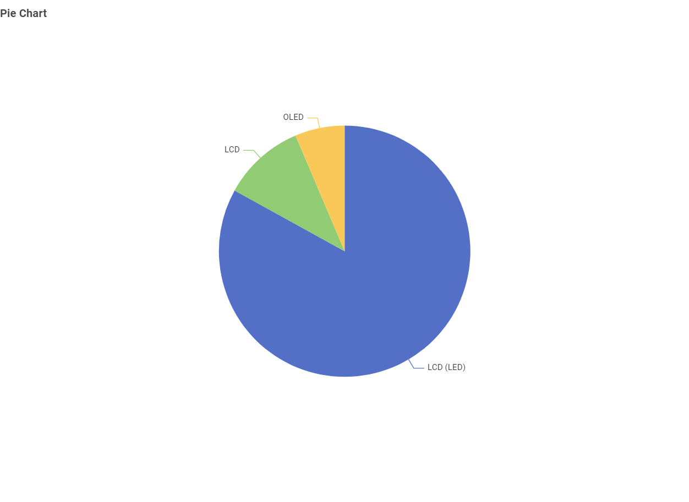
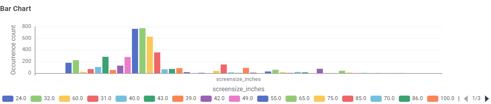
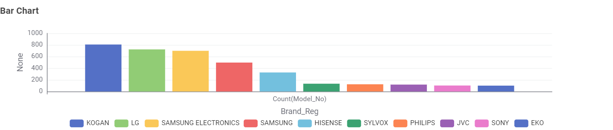
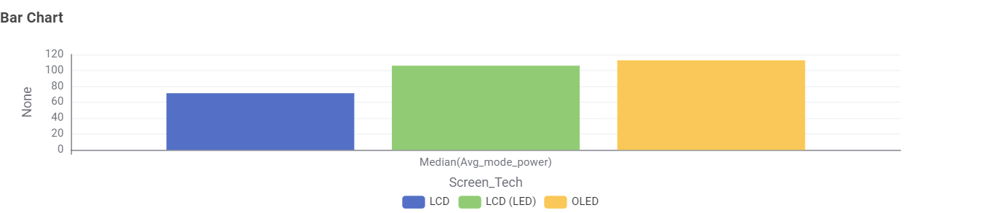
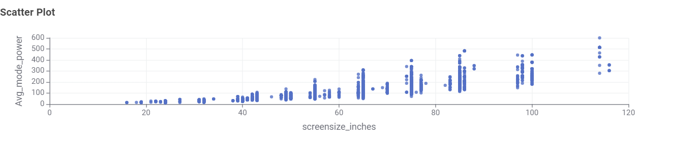
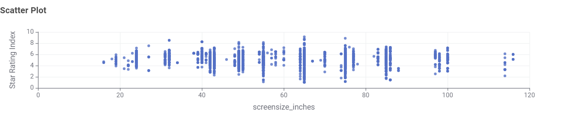
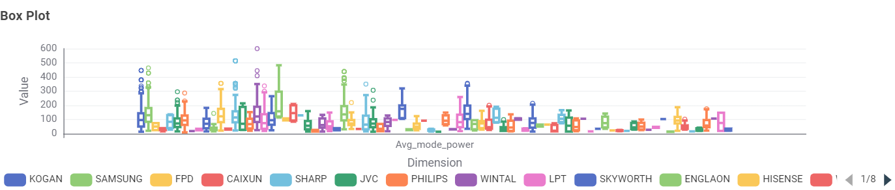

Chart 1: What TV technologies are most common?
Pie Chart

Most TVs in Australia are LCD LED, while OLED is less common.
Size & technology matter. Larger screens and older tech (e.g., plasma) use more energy. Modern LED/LCD and OLED sets are generally more efficient.
Placeholder note: Insert simple examples of annual kWh for common TV sizes in Australia to make this page concrete.
This section presents findings from the Australian Government’s Television Energy Rating dataset. The aim is to help Australian consumers make informed decisions about technology, size, brand, and efficiency.
Pie Chart

Most TVs in Australia are LCD LED, while OLED is less common.
Bar Chart

55-inch TVs are the most common, followed by mid-range sizes like 42–50 inches.
Bar Chart

Samsung, Sony, and Hisense have the largest number of models on the Australian market.
Bar Chart

Standard LCD uses the least median power, while OLED draws slightly more power on average.
Scatter Plot

Larger TVs use more power — the relationship is clearly positive.
Scatter Plot

Star ratings are fairly distributed across all sizes; bigger TVs can still be efficient if well designed.
Box Plot

Yes, there are noticeable differences between brands. Major brands like Samsung and Kogan display large variance in power draw because they offer a wide catalogue from small 24" sets up to massive 98" panels, whereas specialized brands maintain tighter ranges.
When choosing a TV, balance size, brand, and efficiency. A 55-inch LED TV is common and energy-smart for most households.